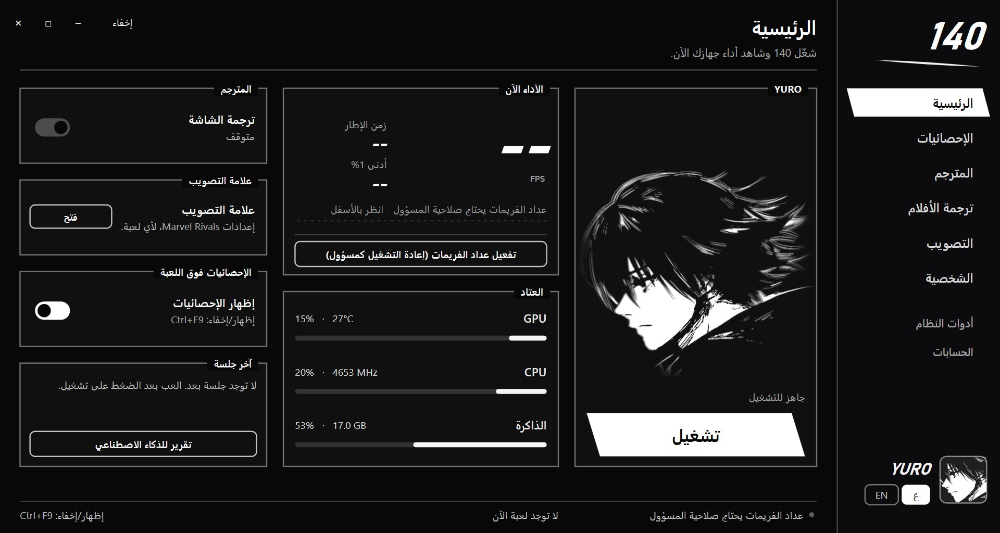
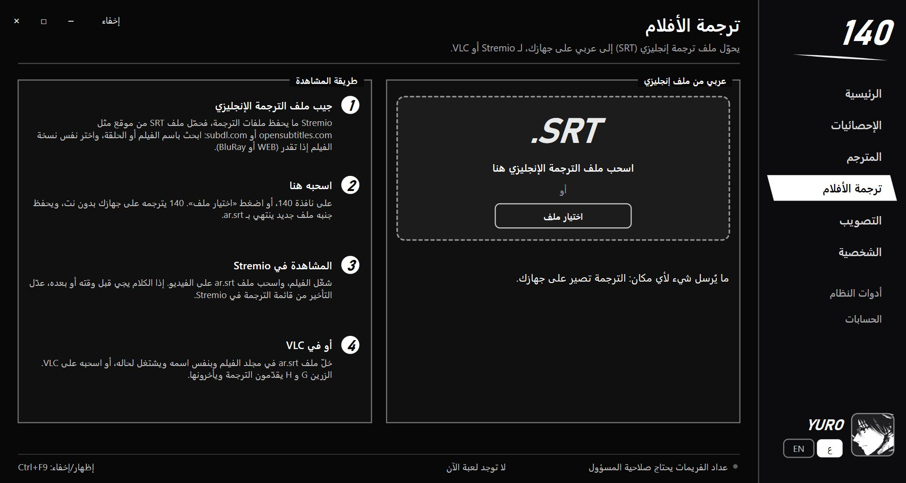
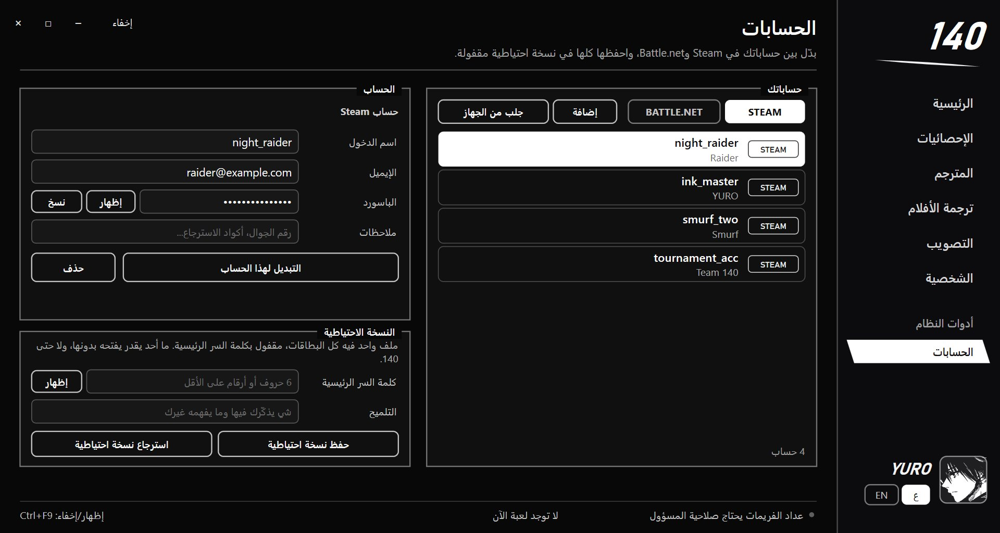
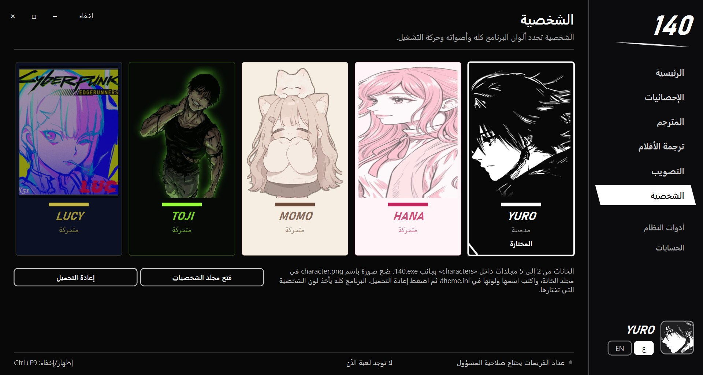
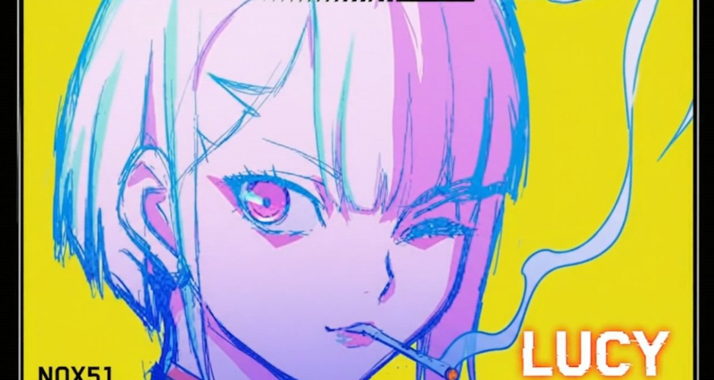
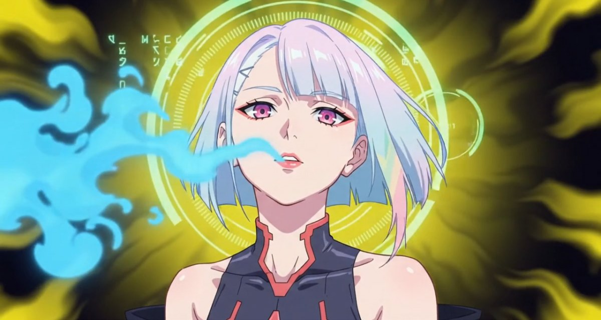
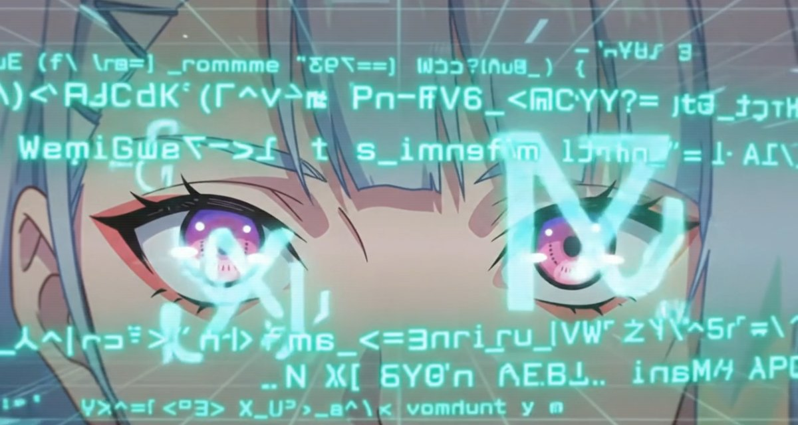
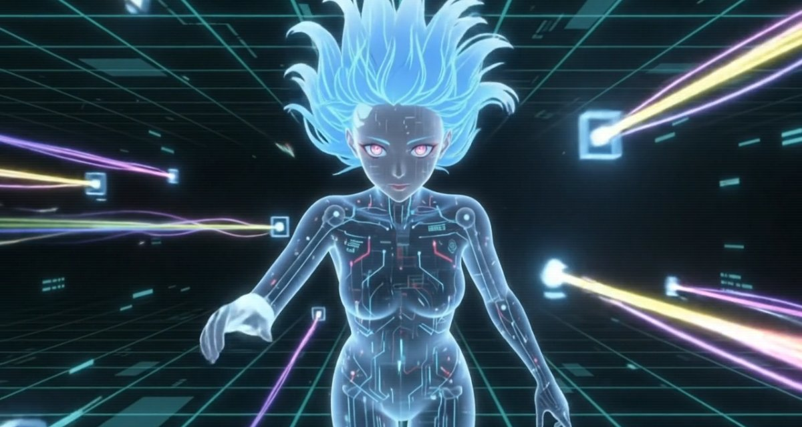
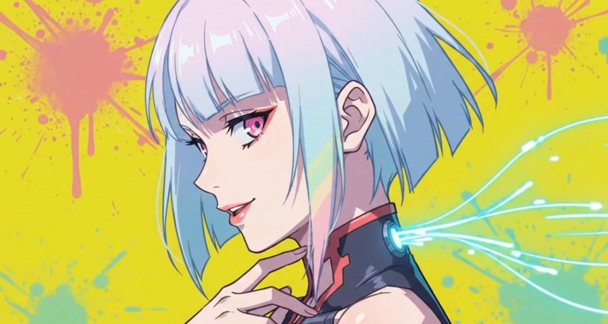
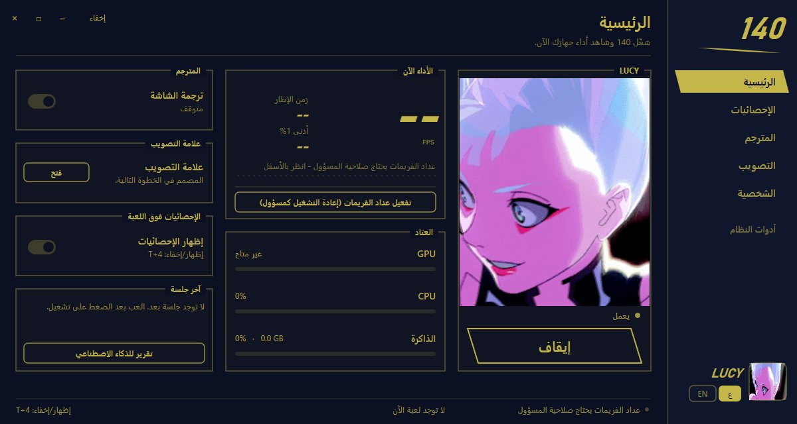

QUEST COMPLETEReturn to the camp before nightfall.
اكتملت المهمةارجع إلى المخيم قبل حلول الليل.
إحصائيات جهازك وأنت تلعب، مترجم يحوّل كلام اللعبة والأفلام للعربي بدون إنترنت، علامة تصويب بنفس إعدادات Marvel Rivals، تبديل حسابات Steam وBattle.net بضغطة، وشخصيات لها ألوانها وموسيقاها. كله في برنامج واحد خفيف ما يلمس اللعبة.
Live PC stats while you play, a translator that turns game text and film subtitles into Arabic offline, a crosshair with the exact Marvel Rivals settings, one-click Steam and Battle.net account switching, and characters with their own colours and music. One light app that never touches the game.

يعرف ليش تكرش ألعابك: Out of memory، المودات، كرت الشاشة. ويصلح اللي بيد ويندوز بضغطة.
Finds why your games crash: out of memory, mods, the graphics card. Fixes what Windows can, in one click.
الفريمات، زمن الإطار، كرت الشاشة والمعالج وحرارتهم، في شريط صغير أو بطاقة.
FPS, frame time, GPU and CPU load and heat, as a small bar or a card.
يقرأ الإنجليزي في اللعبة ويكتب العربي مكانه، على جهازك وبدون إنترنت.
Reads the English in the game and writes the Arabic in its place, on your PC, offline.
تحط ملف ترجمة إنجليزي ويطلع لك ملف عربي جاهز لـ Stremio وVLC.
Drop an English subtitle file and get an Arabic one, ready for Stremio and VLC.
نفس إعدادات Marvel Rivals ونفس الكود، وتشتغل فوق أي لعبة.
The same settings and the same code as Marvel Rivals, over any game.
حسابات Steam وBattle.net بضغطة، مع نسخة احتياطية مقفولة بكلمة سر.
Steam and Battle.net accounts in one click, with a backup locked by a password.
حوّل جهازك لشبكة واي فاي بضغطة، وجوالك يدخل بكود QR.
Turn your PC into a Wi-Fi network in one click; your phone joins with a QR code.
ست شخصيات، لكل وحدة ألوانها وأصواتها وموسيقاها وحركة تشغيل خاصة فيها.
Six characters, each with its own colours, sounds, music and launch scene.
تعزيز اللعب، برامج بدء التشغيل، التنظيف، الشبكة، وتقرير للذكاء الاصطناعي.
Game boost, startup apps, clean-up, network, and a report for AI.
جديدNEWارجع لأي نسخة قبل أو حدّث للأحدث بضغطة، وإعداداتك تبقى.
Go back to any earlier version or up to the newest in one click; your settings stay.
جديدNEWعادي أو كمسؤول دايم بدون ما يسأل، ومع تشغيل الجهاز إذا تبي.
Regular, or always as administrator with no prompt, and with Windows if you like.
نوافذ عادية فوق الشاشة. ما يحقن شيء في اللعبة ولا يقرأ ذاكرتها.
Plain windows over the screen. Nothing is injected and no game memory is read.
وما يلمس اللعبة: كل المعلومات من ويندوز ومن ملفات الكراش، والمودات يعرفها من أسماء الملفات بس.
And it never touches the game: everything comes from Windows and the crash files, and mods are found by file name only.

نفس قائمة اللعبة بنفس الترتيب: النوع، السماكة، الوضوح، الإطار، التمويه، فراغ الوسط، الطول، الزاوية، واللون، ولكل واحد تفاصيل للخطوط والدائرة والنقطة. والكود نفسه كود اللعبة: تنسخه من Marvel Rivals وتستورده، أو تصدّر من 140 وتلصقه في اللعبة. جرّب هنا: الصق أي كود وشوف العلامة.
The game's own list, in its order: type, width, opacity, outline, blur, centre gap, length, angle and colour, each with Details for the lines, circle and dot. The code is the game's code: copy it from Marvel Rivals and import it, or export from 140 and paste it into the game. Try it here: paste any code and see the crosshair.

كل شخصية تغيّر صورة البرنامج وألوانه، وصوت النقرات، والموسيقى، وحركة التشغيل لما تضغط «تشغيل». اضغط على أي وحدة هنا، والموقع كله يلبسها مثل البرنامج.
Each character changes the app's picture and colours, click sounds, music and the launch scene when you press Launch. Tap one here and the whole site wears it, like the app.

يورو يقطع الشاشة بضربة حبر، هانا تفتح زهرة، مومو تمشي بآثار أقدام، توجي يطلع بهالة، لوسي تدخل الشبكة بفيديو كامل، وماغنا يدخل بفيديو وكل نقرة منه لكمة نار.
Yuro cuts the screen with an ink stroke, Hana opens a bloom, Momo walks in paw prints, Toji rises in an aura, Lucy dives into the net with a full video, and Magna storms in with his own video and a fire punch on every click.






تبي شخصية من عندك؟ حط صورتها character.png وملف theme.ini في مجلد الشخصيات، ولو تبي فيديو تشغيل حط launch.mp4، واضغط إعادة التحميل.
Want your own? Put a character.png and a theme.ini in a slot folder, add launch.mp4 for a launch video, and press Reload.
ما يحتاج تثبيت. البرنامج كله في 140.exe، وأول ما تشغله يطلّع شخصياته وأصواتها جنبه.
Nothing to install. The whole app is 140.exe; on first start it writes its characters and sounds next to itself.
مثلًا سطح المكتب\140، لأنه يحط ملفاته جنبه.
For example Desktop\140, since it keeps its files next to itself.
إذا طلع تحذير ويندوز الأزرق اضغط More info ثم Run anyway. يطلع لأن البرنامج ما عليه توقيع مدفوع، ومرة وحدة بس.
If Windows shows the blue warning, press More info, then Run anyway. It shows because the app has no paid signature, and only once.
من الصفحة الرئيسية، وشغّل اللي تبيه: الإحصائيات، المترجم، أو علامة التصويب.
On the home page, then switch on what you want: stats, translator or crosshair.
كل شيء في 140 نوافذ عادية فوق الشاشة، مثل أي برنامج تسجيل أو ديسكورد. ما يحقن ملفات في اللعبة، ولا يقرأ ذاكرتها، ولا يستخدم درايفر. والطبيب ياخذ معلوماته من ويندوز ومن ملفات الكراش، وما يحرّك أي ملف إلا إذا ضغطت أنت واللعبة مسكّرة.
Everything in 140 is a plain window over the screen, like a recorder or Discord. It injects nothing into the game, reads no game memory and uses no driver. The doctor reads Windows and the crash files, and moves a file only when you press the button with the game closed.
خلّ اللعبة على «ملء الشاشة بدون حدود» (Borderless) أو نافذة. وضع ملء الشاشة الحصري يخفي أي شيء فوق اللعبة.
Set the game to borderless or windowed. Exclusive full screen hides everything drawn over a game.
يحتاج صلاحية مسؤول. اضغط «تفعيل عداد الفريمات» في الرئيسية، أو من «أدوات النظام» اختر «كمسؤول دايم» ويشتغل كل مرة بدون ما يسألك.
It needs administrator rights. Press "Enable FPS counter" on the home page, or pick "As administrator" in System tools and it works every time without a prompt.
يحتاج لغة English (United States) مضافة في إعدادات ويندوز، وبعدها يشتغل.
It needs English (United States) added in the Windows language settings.
البطاقات تنحفظ في جهازك بس، مقفولة بقفل ويندوز نفسه: ما يفتحها إلا حسابك في ويندوز على نفس الجهاز، وما تطلع لأي مكان. والنسخة الاحتياطية مقفولة بكلمة سر تختارها أنت (AES-256)، وإذا نسيتها ما أحد يقدر يفتح الملف، ولا حتى 140. التبديل نفسه ما يكتب أي باسورد: يغيّر بس الحساب اللي Steam أو Battle.net يفتح عليه.
The cards stay on your PC, locked with Windows' own protection: only your Windows account on that PC can open them, and they go nowhere. The backup is locked with a password you choose (AES-256); forget it and nobody can open the file, not even 140. Switching never types a password: it only changes which account Steam or Battle.net opens with.
من نسخة v19 وطالع، 140 يحدّث نفسه: إذا نزلت نسخة جديدة ينزل لك شريط من فوق فيه زر «تحديث»، تضغطه ويحمّل ويرجع يفتح لحاله. إعداداتك وعلاماتك المحفوظة تبقى، وأي ملف عدلته بنفسك ما يتغير. إذا عندك نسخة أقدم، حمّل 140.exe من هنا مرة وحدة وحطه مكان القديم.
From v19 on, 140 updates itself: when a new version is out, a bar drops from the top with an "Update" button; press it and 140 downloads and restarts by itself. Your settings and saved crosshairs stay, and files you edited yourself are left alone. On an older copy, download 140.exe here once and put it over the old one.
إي. من «أدوات النظام» ← «نسخة 140» ← «اختيار»، تطلع لك كل النسخ من v19 بتاريخها. تختار وحدة و140 ينزّلها ويعيد التشغيل عليها. وترجع للأحدث من نفس المكان أو من شريط التحديث.
Yes. In System tools, Version of 140, press Choose: every version from v19 shows with its date. Pick one and 140 downloads it and restarts on it. Come back to the newest from the same place or the update bar.
افتح «الطبيب». إذا ملف الصفحات ضعيف يطلع لك زر «إصلاح ملف الصفحات»: تضغطه وتوافق، وبعدها تعيد تشغيل الجهاز. وإذا القرص ممتلي يقول لك كم تفضّي. ولو كرشت بعدها، اضغط «تقرير للذكاء الاصطناعي» وعطه لأي مساعد ذكي.
Open the Doctor. If the page file is weak, a "Fix the page file" button shows: press it, approve, and restart the PC. If the drive is too full it tells you how much to free. If it still crashes, press "Report for AI" and hand it to any assistant.